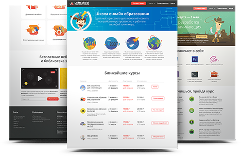
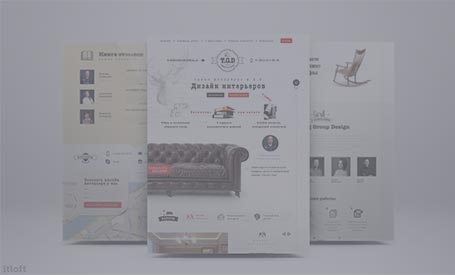

Дмитрий Щеклеин
Личный сайт веб разработчика
Мои работы
Сайт школы онлайн образования
Html,css,javascript
Просмотреть сайт


Что обо мне говорят
Этот парень проходил обучение веб-разработке не где-то, а в LoftSchool! 2 месяца только самых тяжелых испытаний и бессонных ночей!
Ковальчук Дмитрий
- основатель Loftschool
Этот код выдержет любые испытания. Только пожалуйста, не загружается сайт на слишком старых браузерах!
Зар Захаров
- главный преподаватель
Связаться со мной